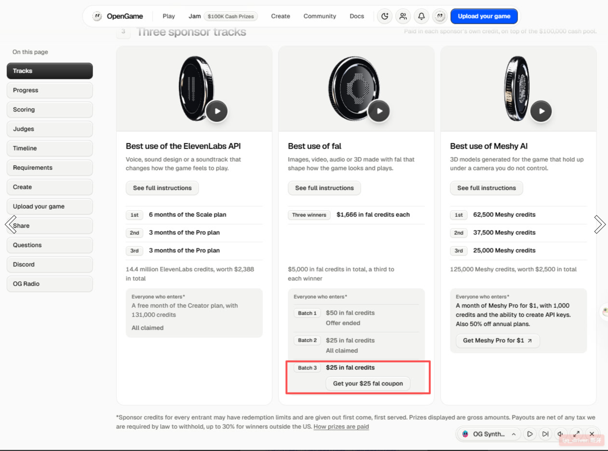
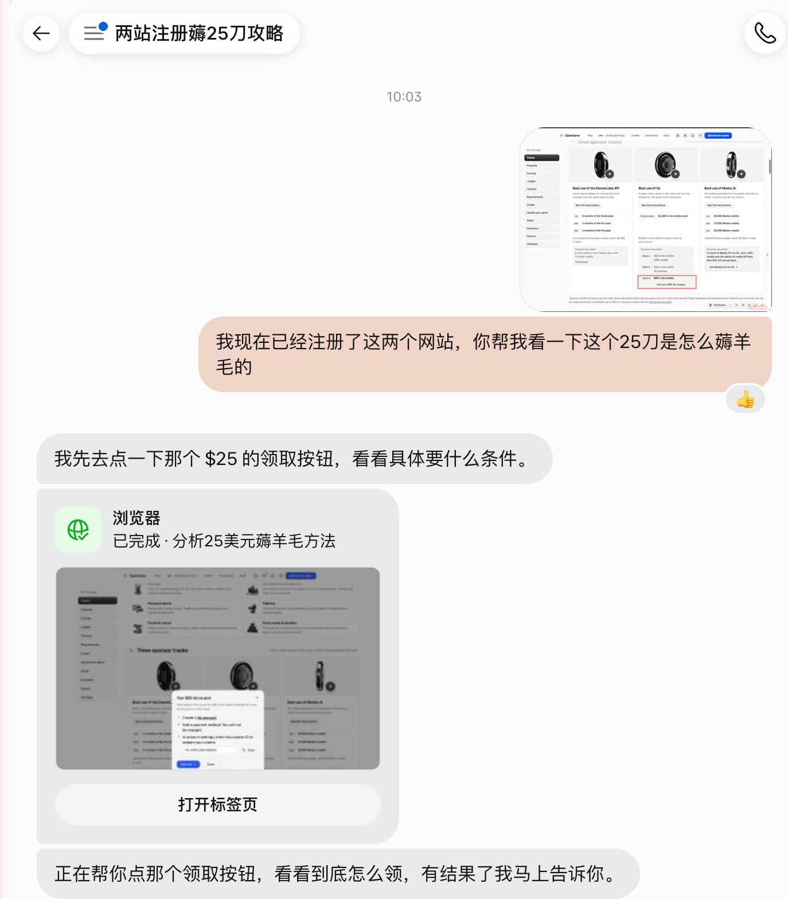
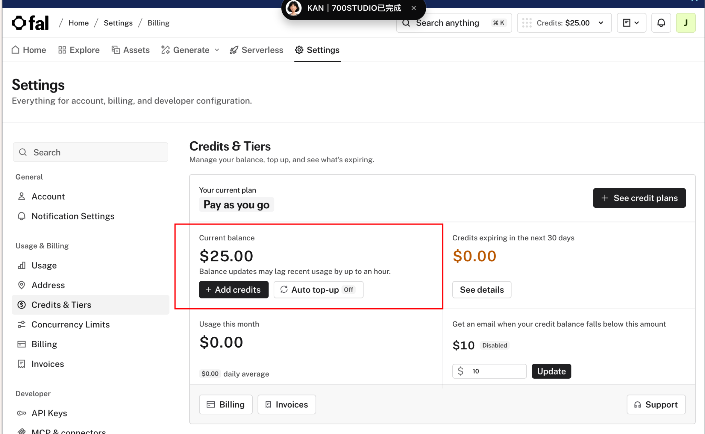
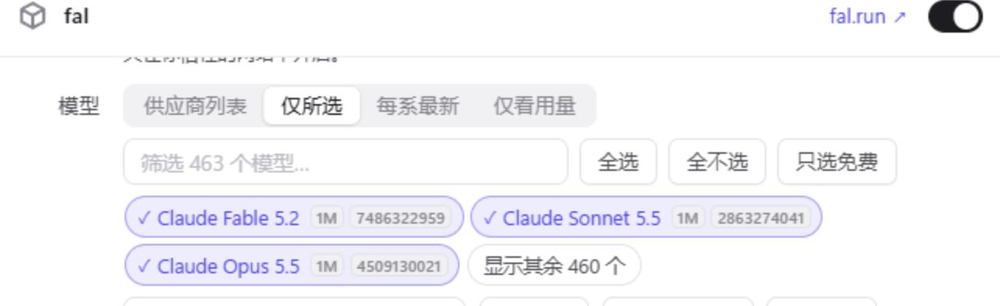

AI 实测 · 薅羊毛记
今天我薅到了 25 美金，全程不到 10 分钟，动手干活的不是我，是 Muse。这篇把三件事讲清楚：羊毛在哪、为什么值得薅、我是怎么一步没动把它领回来的。
| 01 | PART 01 · THE STORY 事情是这样的 |
起因是在 linux.do 上看到一个帖子：OpenGame 的游戏 Jam 里，fal 赞助赛道放出了第三批兑换码，能领 25 美金的额度。前两批——第一批 50 美金、第二批 25 美金——都已经领完了。

OpenGame 的 fal 赛道：第三批 $25，前两批都已领完
我先注册了 opengame 和 fal.ai 两个网站的账户。结果一开始，怎么都找不到兑换码填在哪儿。
找不到，就不找了。我直接让 Muse 接管 Chrome 浏览器，帮我搞定。剩下的事——找入口、填码、确认到账——全是它一步步做完的，我就在旁边看着。全程不到 10 分钟，25 美金到账。

我就说了一句话，剩下的全是 Muse 干的
| 02 | PART 02 · WHY IT MATTERS 为什么这 25 美金值得薅 |
先看账户：余额 25 美金，本月已用 0 美金，Pay as you go（按量付费），自动充值是关着的。也就是说，这不是那种先绑卡、到期自动扣费的「试用金」，是实打实躺在账户里、花多少算多少的额度。

账户实拍：余额 $25.00，本月用了 $0.00
更重要的是，这钱我花得出去。fal 这条赛道做的就是图片、视频、音频和 3D 生成——正是我做 OpenGame 游戏时要用的素材。以后游戏里缺张图、缺段音效、缺个 3D 模型，直接用它生成，额度当场就能抵掉。
而且这个平台可以直接调用 Claude 大模型，还能通过 API 本地化使用——接进我本地的工作流里，不用每次打开网页点来点去。对我这种天天在本机折腾 AI 的人来说，这才是它真正的价值。

fal 上可以直接调用 Claude 的模型
| 03 | PART 03 · THE POINT 真正的重点，不是 25 美金 |
回头想想，这件事有意思的地方，不在金额。
以前薅个羊毛，注册、找入口、填表、试错，半小时起步。很多人不是没看到，是懒得弄——我就是。
现在流程变了：你只要把帖子丢给 Muse，它自己开浏览器找路，把活干完，你最后验收一下结果就行。羊毛还是那个羊毛，薅的人换成了 AI，成本降到了几乎为零。
不是羊毛变多了，是以前嫌麻烦放弃的那些，现在都顺手了。
最后说句实在的：兑换码是第三批，先到先得，我领的时候还有。你看到这篇的时候还有没有，我真说不准——这类东西一向手快有、手慢无。
关注橘子哥，带你看目前最落地的 AI 运用案例。
往期回顾：《Muse 新手教程：一句话，替你办事》
下一篇预告：《我这样用 Muse》系列开篇——我的工作台长什么样